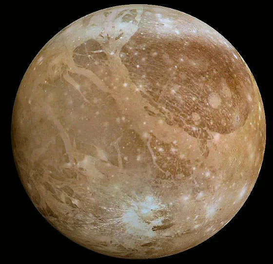
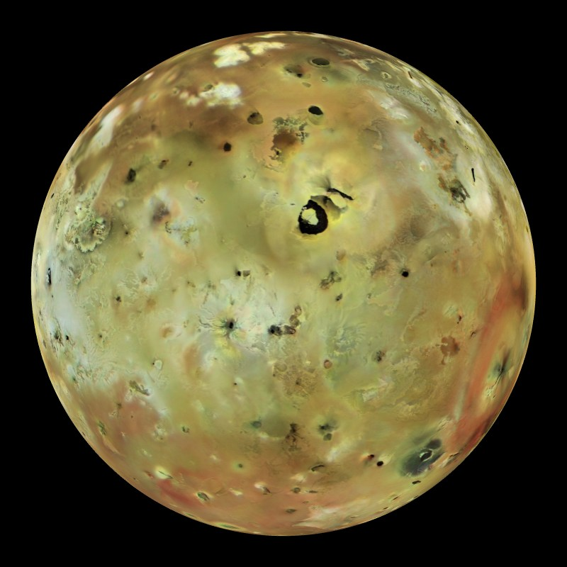
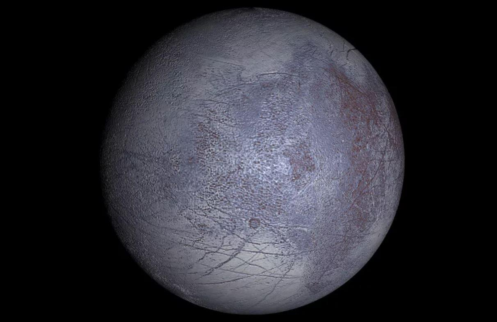

|  | Ганимед-крупнейший спутник солнечной системы по размерам больше меркурия и почти равен марсу.Единственый спутник солнечной системы имеющий магнитное поле.Предположитеьно под поверхностю спутника имеется жидкий соленый океан чередующийся слоями льда |
|  | ИО-самый вулканический объект в солнечной системе иза постояных извержений рельеф все время изменяется , самое большое извержение было в 550км
хотя спутник имеет диаметр З642км и размером чуть больше земной луны.Поверхность в основном состоит из базальта и серы.Почти отсутствует атмосфера, она состоит из соединений серы и кислорода |
|  | Европа-является наименщим галелеевским спутником и имеет размеры чуть меньше земной луны.Поверхность покрыта льдом и является очень гладкой, под слоем льда находится жидкая вода просачуваящаяся через гейзеры |
| >rere |
| |
|
| trtr | rere |
| trtr | rere |
| trtr | rere |
| trtr | rere |
| trtr | rere |